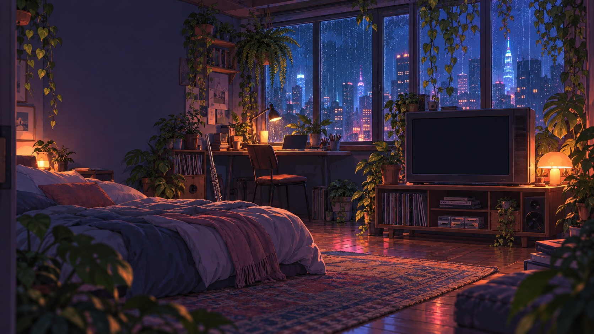

mareomni
hi, i'm marilyn.
i make little films about things i notice.
ON THE TVi thought it would feel different.
SHORT FILMS 01
Short films
A few things I’ve made.
02
things i've written
some thoughts that made it out of my notes app.
03
a map of my brain
click around. things are loosely connected.
TAP A TOPIC TO EXPLORE
04
the collection
browse by topic or format.
05
hi, i'm marilyn.
i'm a software engineer in new york who makes little films about things i notice.
i'm interested in how people think, the things we chase, and the small moments we tend to overlook. sometimes those thoughts turn into films, sometimes into writing, and sometimes they don't turn into anything at all.
outside of that, i play the flute and piano, host league of legends 5v5s at pc cafes, and study movies.